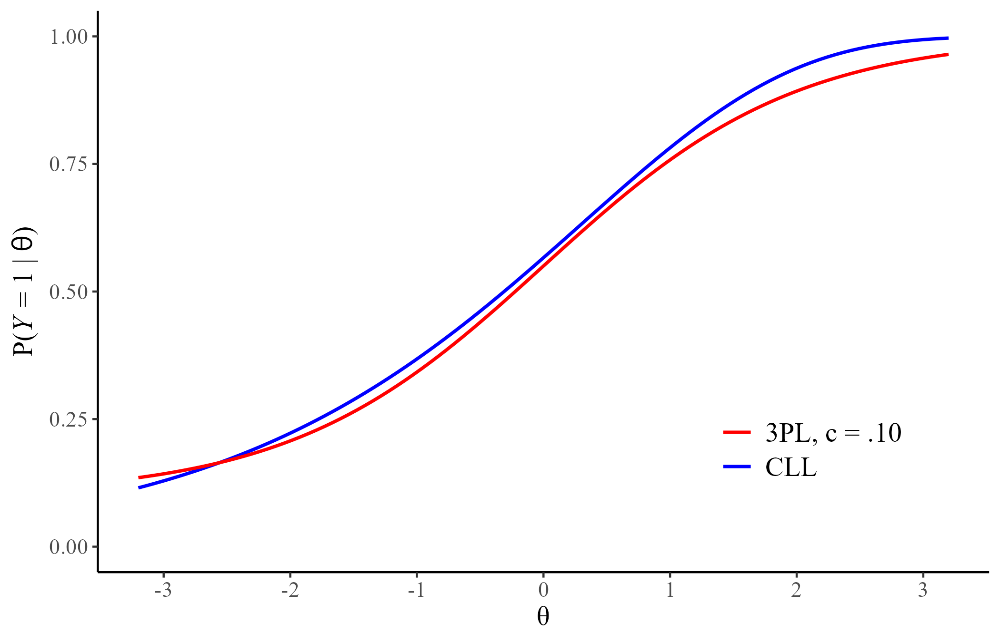
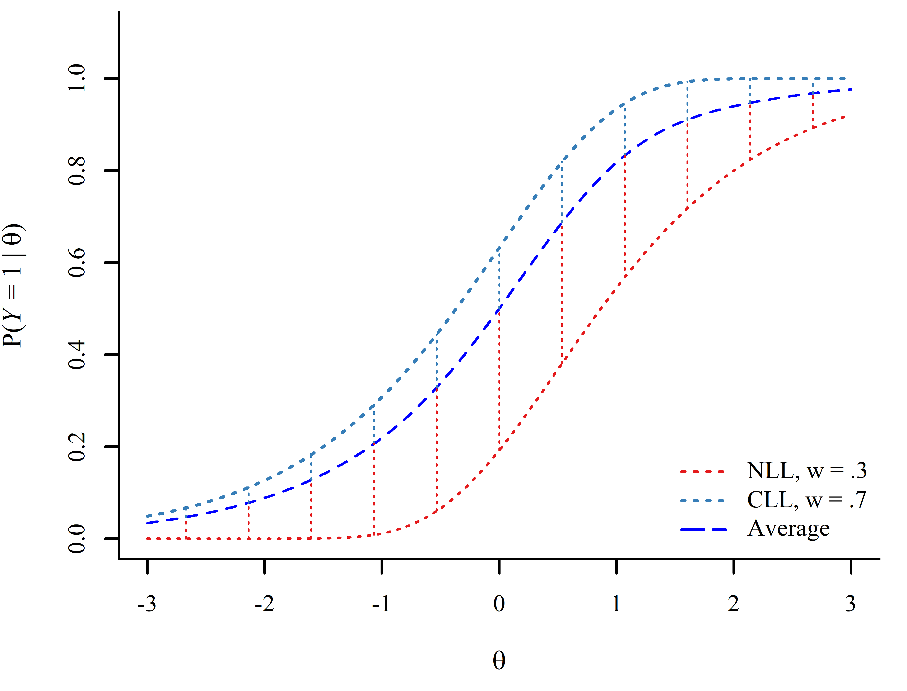
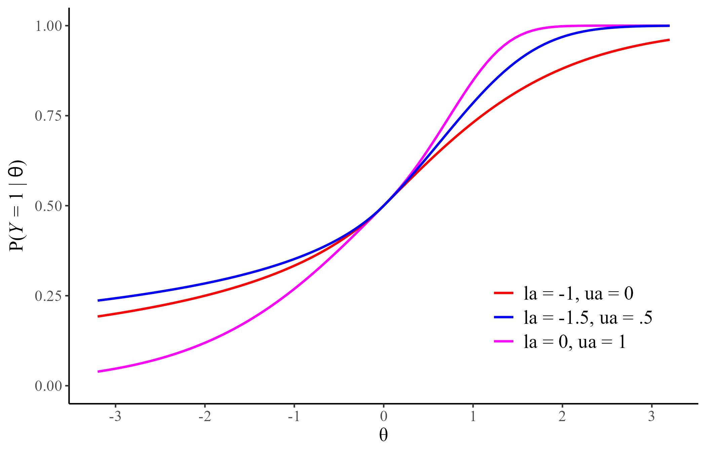
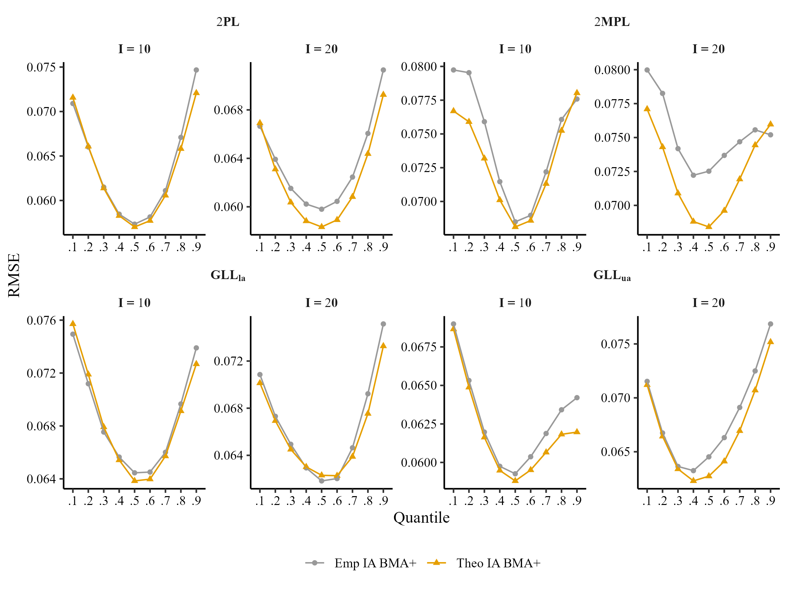

Bayesian Model Averaging of (a)symmetric IRT Models in Small Samples
Fordham University
Estimation and Sample Size in IRT
The more item parameters are added to the model, the more flexible the item response functions (IRFs).
However, the additional parameters of the 3PL and 4PL tend to require large sample sizes (\(N \geq 1000\)) to be stably estimated.
1PL models seem to be stably estimable with sample sizes as low as \(N = 100\) (Finch & French, 2019).
2PL models seems to require a sample size of \(N = 200\) or more (Drasgow, 1989; Liu & Yang, 2018).
1PL models showed good coverage when \(N = 100\) and generally outperformed maximum likelihood (Finch & French, 2019).
2PL models with hierarchical priors perform reasonably well even when \(N = 100\) (König et al., 2020).
Simple Asymmetric IRT Models
Most asymmetric models include asymmetry parameters that are hard to estimate in small sample sizes (e.g., Gonçalves et al., 2023; Lee & Bolt, 2018; Verkuilen & Johnson, 2024) Two recently proposed asymmetric IRT models (Shim et al., 2023a, 2023b) may help address this issue:
Complementary Log-Log (CLL)
\[ P(Y = 1| \theta) = 1 - \exp[-\exp[a(\theta - b)]]\]

Negative Log-Log (NLL)
\[ P(Y = 1| \theta) = \exp[-\exp[-a(\theta - b)]]\]
What to do about Small Sample Sizes?
Although the NLL and CLL may approximate more complex models, complex IRFs remain hard to approximate in small sample sizes (\(N \leq 250\)) with a single model.
Model averaging takes into account model uncertainty by weighting a set of candidate models according to their relative plausibility.
BMA weights are based on a leave-one-out cross validation approximation (Vehtari et al., 2017). This provides a fit measure for each data point.
Calculating model weights:
- Test level weights
- Item level weights?
Two type of weights (Yao et al., 2018):
BMA weights with Bayesian bootstrapping (BMA+)
Stacking weights
Averaging Predicted Probability of Keyed Responses
estimate \(P(Y = 1|\theta)\) by averaging along a common \(\theta\) continuum. Assumes a common \(\theta\) scale across models.

estimate \(P(Y = 1|\theta)\) by averaging along a common empirical \(\theta\) continuum. Can accommodate different \(\theta\) scales.
Empirical Example
We fit the 1PL, 2PL, 1CLL, 2CLL, 1NLL, 2NLL with the brms package (Bürkner, 2017) to the Bond’s Logical Operations Test (BLOT; Bond & Fox, 2007) dataset from the PsychTools package (Revelle, 2024), which includes 150 participants and 35 items.

Simulation
Most data generating condition purposely introduced some type of model misspecification. There were 4 data generating conditions:
2PL: \(\frac{\exp[a(\theta - b)]}{1 + \exp[a(\theta - b)]}\)
2MPL: \(\frac{1}{1 +\exp[-(a_{1}\theta_{1} + a_{2}\theta_{2} + d)]}\)
GLLla and GLLua (Zhang et al., 2022)

- 4 data-generating models (2PL, 2MPL, GLLla, GLLua)
- 2 sample sizes (N = 100, 250)
- 2 test lengths (I = 10, 20)
- 100 replications (R)
- 9 quantiles (q = .10,…,.90)
We will compare the performance of model selection (MS), test averaging (TA), item averaging (IA), and kernel smoothing IRT (KS):
\[RMSE_{q} = \sqrt{\frac{1}{100}\sum_{r=1}^{100}\frac{1}{I}\sum_{i = 1}^{I}[P_r(y_{in} = 1|\theta_{q}) - \hat{P}_r(y_{in} = 1|\tilde{\theta}_{q})]^{2}}\]
Distribution of Test and Item Weights
Performance of BMA+ Over Stacking Weights
Comparison of Item Averaging at Theoretical and Empirical Quantiles (N = 100)
Comparison of Test Averaging at Theoretical and Empirical Quantiles (N = 100)
Comparison of Averaging Methods, Model selection (MS), Kernel Smoothing (KS) for I = 10
Comparison of Averaging Methods, Model selection (MS), Kernel Smoothing (KS) for I = 20
Summary of Results
- Item weights may provide useful insight into individual item behavior.
- Either item weights or test weights can provide a stable method of detecting and estimating asymmetry in small sample sizes.
- Item level averaging, followed by test level averaging, consistently offered better IRF recovery.
- BMA+ weights showed better performance for IA, while stacking weights and BMA + weights performed similarly in the case of TA.
Acknowledgement & Contacts
- My advisor: Leah Feuerstahler (leah@fordham.edu)
- Fordham’s High Performance Computing team, especially Andrew Angelopoulos (aangelopoulos@fordham.edu)

References
Appendix
Model Priors
Model estimation used the partial pooling approach in the estimation of model parameters (i.e., random intercepts/slopes)
\(log(\bar{a}) = N(0, .5)\)
\(\sigma_{log(\bar{a})} = \mathrm{Exponential}(3)\)
\(\bar{b} = N(0, 1)\)
\(\sigma_{\bar{b}} = \mathrm{Lognormal}(.25, .5)\)
\(\bar{\theta} = 0\)
\(\sigma_\bar{\theta} = 1\)
IRF Averaging Scheme
1. Posterior distributions of parameters: The MCMC sampler provides \(N\) (6000 in this simulation) draws for each model parameter.
↓
2. Posterior distributions of \(P(Y = 1|\theta_q)\): The predicted probability of a keyed response is calculated at a set of empirical or theoretical quantiles , \(P(Y = 1|\theta_q)\), for all models across all MCMC draws.
↓
3. Model weights: A weight (stacking or BMA+) is calculated for each model.
↓
4. Averaged distribution of \(P(Y = 1|\theta_q)\): sample from each model distribution estimated in step 2 in proportion to model weight.
All BLOT items Predictions

Parameter Generating Distributions for Simulation
LOO diffrence/SE for I = 10
LOO diffrence/SE for I = 20
Comparison of Item Averaging at Theoretical and Empirical Quantiles (N = 250)
Comparison of Test Averaging at Theoretical and Empirical Quantiles (N = 250)
IMPS 2024